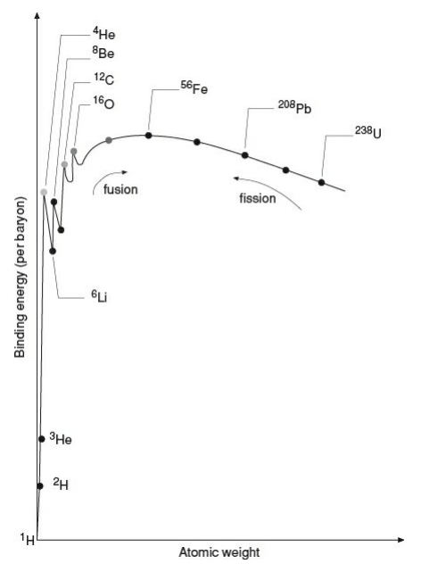
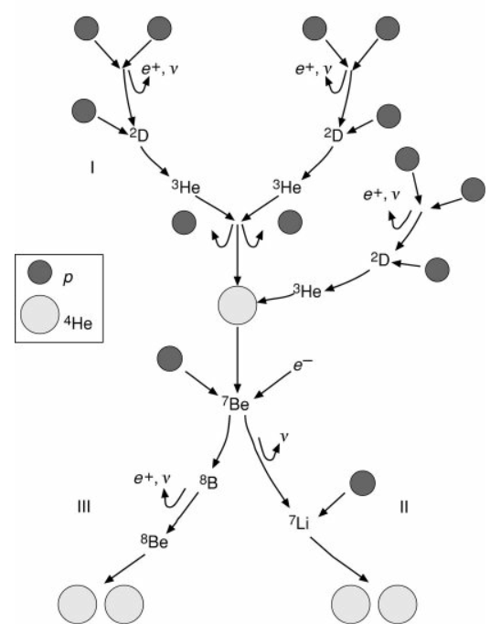
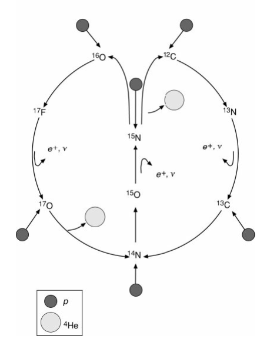

恒星的能源来自热核反应，$\Delta E=\Delta mc^2$。
原子的结合能
核反应释放的能量
核反应
正反应与逆反应平衡时，称处于核统计平衡。
释放核能
原子核$I$形成前，$A_i$个相距无穷远的核子的质量为$A_im_H$，$Q_{ijk}$可以写为：
对原子核$I$，定义质量过剩
其物理意义是自由核子结合成原子核吸收的能量。
从而
又由于核反应前后核子数守恒，第二项为零，故
核区某点产能率
单位时间、单位体积的产能
由
得到单位质量气体核产能率
考虑所有核反应，总核产能率
注意核反应有一部分能量被中微子带走，但中微子几乎不参与恒星内部的物理过程，故需要将其扣除。产能率
常见中微子过程
- $\beta$衰变：中子衰变成质子和电子，放出一个反电子中微子$\beta^+$衰变：
- 光致中微子过程
- 正负电子对湮灭($i=e,\tau,\mu$)都有可能。通常释放gamma光子
逆反应：电子对产生，发生在高温、高密度情况
核反应的可行性
可能的反应路线
自由核子结合形成原子核$I(A,Z)$释放能量$\Delta \epsilon$，定义该原子核的结合能为
即平均每个核子释放的能量。
结合能越大，原子核越稳定。

由结合能曲线，${}^{56}\mathrm{Fe}$有最大的结合能，原子核最稳定。更重的核裂变和更轻的核聚变都能自发进行，释放能量。恒星聚变形成铁核后，核反应终止，经历超新星爆炸后一部分铁碎裂飞出，形成ISM。
库伦势垒
氢原子要发生核聚变，需要靠近到强核力起作用的距离内($r\le 10^{-15}\mathrm{m}$)。
原子热运动动能$E_k\sim \frac{3}{2}kT\sim 1\mathrm{keV}$，而库伦势能$E_c\sim 10^3\mathrm{keV}$，故热运动无法突破库伦势垒产生核聚变。
考虑量子隧穿效应。发生量子隧穿的概率
其中$v$为原子相对运动的速率。
从而反应截面$S\propto P\mathrm{d}n(v)$，其中$n(v)$是速度在$v\sim v+\mathrm{d}v$之间的粒子的数密度。
对处于热平衡态的气体，由麦克斯韦分布，
从而反应率
$R_{ijk}$存在极大值，在$v=v_p$处，称为Gamov峰。
峰值反应率
- $T$增大时，峰值反应率增大（指数项主导）。
- $Z_i$增大时反应率减小，即更重的元素发生聚变需要更高的温度。恒星在主序中燃烧氢，氢燃料耗尽后恒星引力塌缩，释放引力势能，温度升高，从而可以点火氦聚变。
另外，$I$和$J$原子发生核反应会有短暂的中间态：
$(I+J)^*$是处于量子共振态的复合核。这一效应也可以提高核反应率。
核反应时标
$\tau_i$为$I$元素在$I$于$J$发生核反应被消耗的特征时标。
单位时间、单位体积内$n_jR_{ijk}$个$J$原子核和$I$原子核发生了核反应。其倒数就是消耗一个$I$原子核的特征时间。
对温度依赖
$R_{ijk}$十分依赖温度，发生核反应需要大于某一点火温度。
对核产能率$q$，有经验关系
对不同的核反应有不同的$n$。
氢燃烧I：p-p链
pp-I
大致的反应路线为
（中间核的衰变称为$\beta^+$衰变）
具体反应过程为：
净效果为
产能
产能率
远大于化学反应，仅次于黑洞吸积释能（史瓦西黑洞$\epsilon\sim15\%$，克尔黑洞$\epsilon\sim42\%$）。
pp-II和pp-III
pp-II和pp-III的第一步反应相同，且都需要pp-I先进行：
pp-II分支：
pp-III分支：
整个pp链的反应如图：

讨论：
- 各分支并列进行，但相对比重依赖于$T,\rho,X_i$。
例如，相对丰度固定时，随温度升高，反应由pp-I主导变为pp-II、pp-III主导（越后面的对温度越敏感）。 - 核反应产生的能量一部分被中微子带走，且在不同反应中中微子能量不同。低能中微子主要在pp-I反应中产生（两个质子结合），高能中微子主要在pp-III反应中产生（硼衰变）。
- pp链三个分支的平均单次反应释能$\bar{Q}_{\mathrm{p-p}}\sim26\mathrm{MeV}$
平均产能率$\epsilon\approx 6\times10^{18}\mathrm{erg/g}$ - 反应速率取决于最慢的反应（pp-I）
核产能率$q\sim \rho T^n$，对pp链$n\approx 4\sim6$。在各核反应中，pp链是对温度最不敏感的。 - 由此计算能量释放时标$\tau$（pp链维持的氢燃烧时间），对$M\sim M_\odot$，$\tau\sim 10^{10}\mathrm{yr}$
- 由Gamov峰核反应率公式，涉及越重的核的反应需要越高的温度，因而pp链是点火温度最低的。
氢燃烧II：CNO双循环
两个并列的循环，有C、N、O元素参与（上一代超新星增丰），类似催化效果。两个独立的循环：

净反应都为
讨论：
- C、N、O、F元素循环利用，丰度不随时间变化
- 相对丰度与温度有关
- 反应速率取决于最慢的反应。
实验表明质子俘获反应对温度的依赖很敏感，而$\beta^+$衰变基本与温度无关。因此高温时$\beta^+$衰变较慢，决定了总反应速率。 - 单次CNO循环释放光子的能量$\sim 25\mathrm{MeV}$
总产能率CNO循环比pp链更依赖温度。
氦燃烧：$3\alpha$过程
恒星氢燃料耗尽后，会收缩释放引力势能，点燃氦聚变。
两个氦核会发生反应
${}_4^8Be$的寿命很短，在$10^{-16}\mathrm{s}$内就会衰变成两个氦核（逆反应），反应无法进行下去。
在$T\ge 10^8\mathrm{K}$时，且$n_{^8\mathrm{Be}}/n_{^4\mathrm{He}}\sim 10^{-9}$时，正反应可以为主导反应。此时一部分${}^8\mathrm{Be}$可以进一步反应：
其中${}_{\ \ 6}^{12}\mathrm{C}^*$是激发量子共振态，后一个反应就是量子共振态的退激发。
总反应为：
称为 $3\alpha$过程。
一次反应释能
产能率
约为pp链的十分之一。
核产能率的经验公式
对温度依赖敏感。
${}_{\ \ 6}^{12}\mathrm{C}$还可以进一步俘获$\alpha$粒子：
${}_{\ \ 8}^{16}\mathrm{O}$的库伦势垒已经很大，难以进一步俘获$\alpha$粒子进行反应。从而${}_{\ \ 8}^{16}\mathrm{O}$可以在恒星中累积。
碳和氧的燃烧
氦耗尽后，恒星进一步收缩升温，可以触发碳和氧的燃烧。
碳燃烧：
${}_{12}^{24}\mathrm{Mg}$可能发生如下几种衰变：
四种衰变路径概率相当，并行进行。
一次反应$Q\sim 13\mathrm{MeV}$，$\epsilon\sim 5.2\times 10^{17}\mathrm{erg/g}$（略低于$\epsilon_{3\alpha}$）。
氧燃烧：
${}_{16}^{32}\mathrm{S}$可能发生以下几种衰变：
四种衰变路径并行进行。
一次反应$Q\sim 13\mathrm{MeV}$，$\epsilon\sim 4.8\times 10^{17}\mathrm{erg/g}$。
讨论：
- 碳燃烧和氧燃烧增加了氢核和氦核的丰度，增丰的氢和氦再被重核俘获可以形成更多同位素
- 氧燃烧生成${}_{14}^{28}\mathrm{Si}$的概率更大，使得硅元素更丰富（地球上硅酸盐）
硅的燃烧：核统计平衡
核统计平衡(Nuclear Statistical Equilibrium, NSE)
在$T\sim 10^9\mathrm{K}$，${}_{\ \ 8}^{16}\mathrm{O}$俘获$\alpha$粒子，
温度升高到$T\sim 1.5\times10^9\mathrm{K}$，发生逆反应：
称为光致解离过程。
类似地，在$T\sim 3\times10^9\mathrm{K}$，会发生${}_{14}^{28}\mathrm{Si}$的光致解离。
NSE计算正反应和逆反应速率基本相等，但总体上倾向于形成更稳定的核——铁族：${}^{56}\mathrm{Fe},\mathrm{Co},\mathrm{Ni}$。
铁族元素最稳定，不易分解，释能的核聚变也到此为止。
在$T\gtrsim 7\times10^9\mathrm{K}$时，可以发生铁核的光致解离。
重元素的形成：s过程，r过程
重元素可以发生中子俘获反应，俘获$\mathrm{C},\mathrm{O},\mathrm{Si}$燃烧产生的中子，由于中子是电中性的，不需要克服库伦势垒，反应温度较低：
只要$I_n$核结构稳定，中子俘获反应就可以一直进行下去，生成$I$的更重的同位素。
如果$I_n$核不稳定，发生$\beta$衰变：
$J$核也可能继续发生$\beta$衰变，直到形成稳定的核，可以形成元素周期表后面的元素。
由不稳定核出发，进行自发演化，时标更短的反应路线占主导。实验室发现，$\tau_\beta\sim\mathrm{const.}$，$\tau_n=\tau_n(\rho,T)$。
由$\beta$衰变反应主导的过程称为s过程，由中子俘获反应主导的过程称为r过程。
恒星中进行一系列s过程和r过程形成重元素。
$\mathrm{Au}$的形成：
- 大质量恒星晚期的s、r过程
- 双中子星并合
正负电子对的产生
实验室中发现，原子核吸收高能光子产生正负电子对，
称为对产生过程(pair production)。
能量守恒要求$h\nu \ge 2m_e$，频率位于gamma波段，$h\nu\sim kT$对应黑体辐射温度$T\sim 10^{10}\mathrm{K}$。
由于黑体辐射的普朗克频谱有高能尾巴，只需要$T\ge10^9\mathrm{K}$，也可以有大量gamma光子，进行对产生。
类似地，氢原子的光致电离过程需要$h\nu \ge 13.6\mathrm{eV}$，对应$T\sim 10^5\mathrm{K}$，而事实上$T\sim 10^4\mathrm{K}$就有较多光子可以电离氢原子，因此恒星气体中有较多比例的电离氢。
铁核光致解离
${}_{26}^{56}\mathrm{Fe}$核吸收光子，被逐步剥离
光子要克服铁核的强相互作用，需要能量$h\nu\sim 100\mathrm{MeV}$，需要很高的温度。此时${}_{2}^{4}\mathrm{He}$的丰度可能超过${}_{26}^{56}\mathrm{Fe}$。
若温度继续升高，可能出现${}_{2}^{4}\mathrm{He}$的光致解离，
主序星的温度要可以点火核聚变，且重核不会完全解离，故
和观测结果一致。